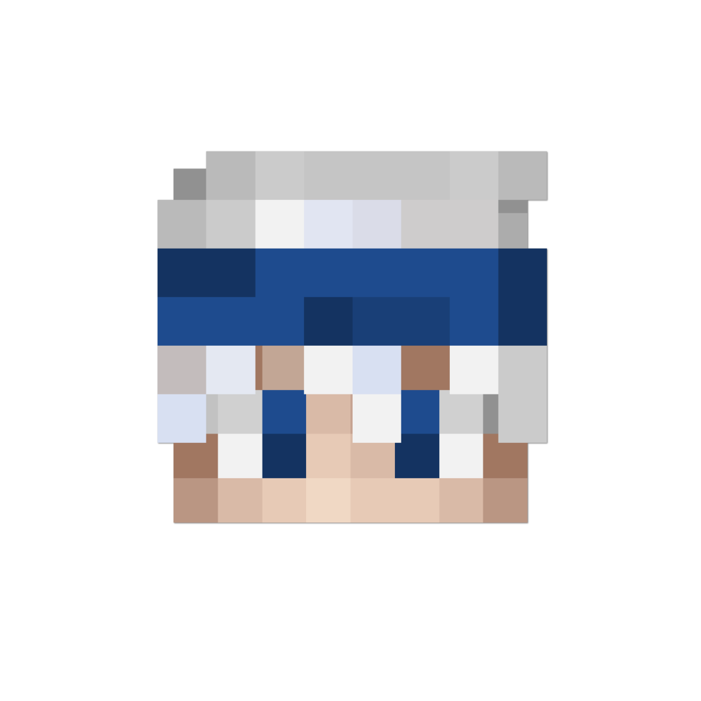

Our Founder: Rqsst
He started in early 2016 and first discovered his enthusiasm for PvP on Mineplex. He first gained recognition on the server by winning the CCL Season 2 Playoffs hosted by MCL (Mineplex Competitive League). He then went on to win the CCL Season 3 Playoffs and BCL Ranking tournament. After winning the BCL Tournament, he decided to launch a training guild after numerous requests. This is when the guild was founded and throughout his reign he took in hundreds of players and helped them improve. As Mineplex started to die in popularity, he shifted his focus towards Lunar, a new flourishing PvP server made in conjunction with the popular Minecraft client. After a year of that, he decided to retire due to personal issues. He handed the guild off to his #1 pupil, Rseu, and left for good. Rseu focused the guild's trajectory from Lunar to Minemen, as Minemen was considered superior and Lunar shut down in early 2023.
About The Dojo
Founded in 2016 and put on hiatus in 2022, The Dojo has evolved under its founders, Rqsst and Rseu. We focus on PvP gameplay, primarily using Minecraft versions 1.7-1.8 exclusively. Our community has a rich history of training and competitive gameplay, fostering players to enhance their skills.